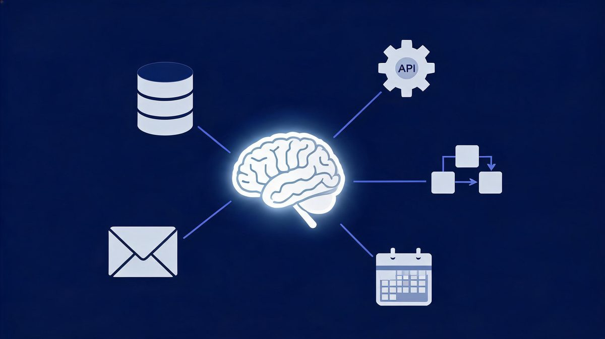
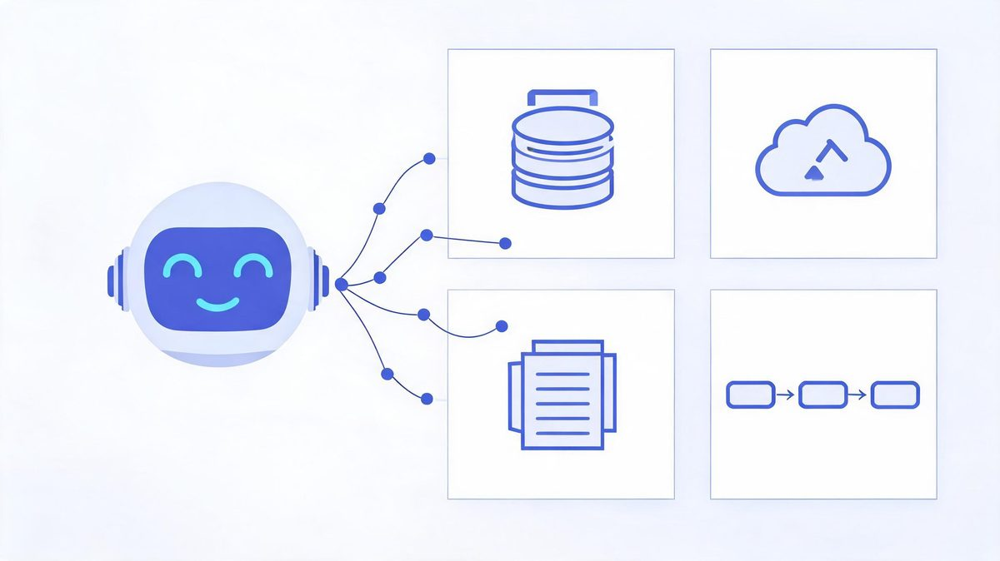
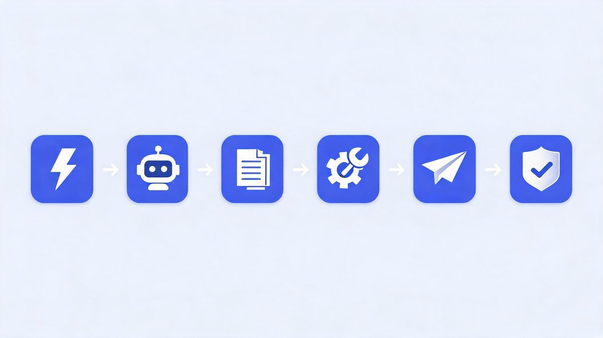
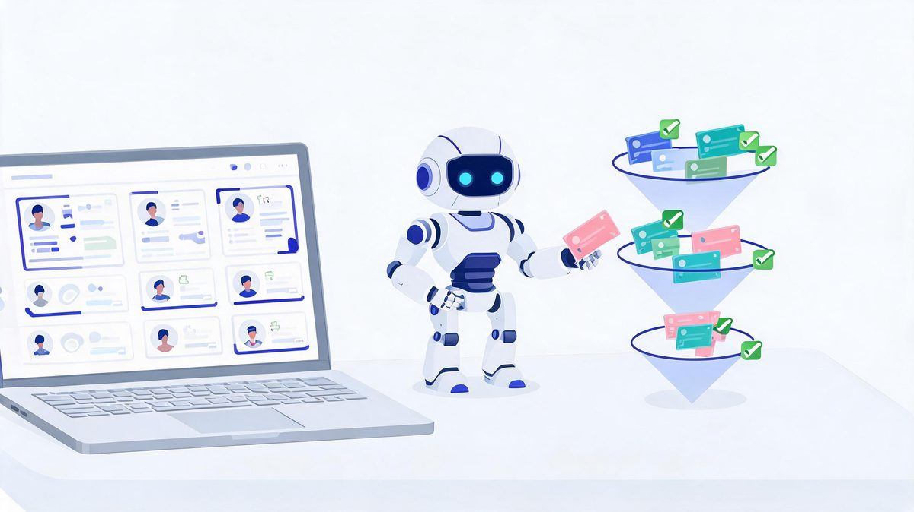
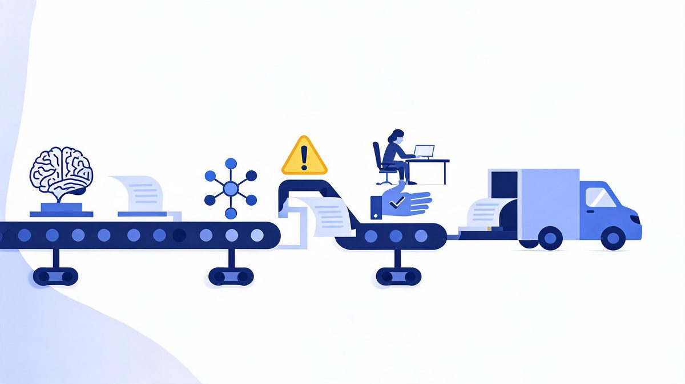
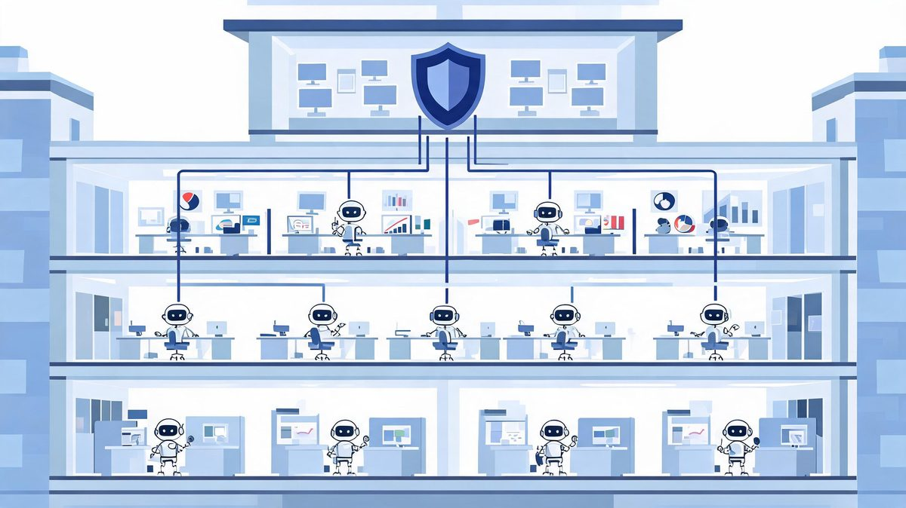
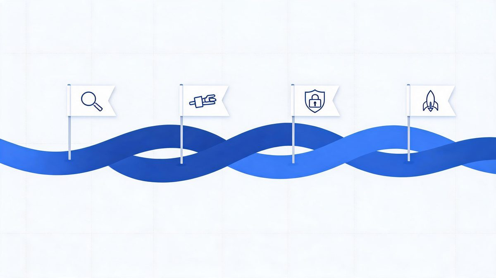

AI Agent Integration: How to Connect AI Agents to Business Workflows

Companies have spent two years buying AI agents that impress in demos and die in deployment. IDC research puts a number on it: 88% of AI agent pilots never reach production — and the reasons are integration, reliability, and security, not bad models.
Quick answer: AI agent integration is the process of connecting an AI agent to your business software — CRM, APIs, databases, and workflows — so it can retrieve information and perform authorized actions on its own. The work that matters is not picking a model; it is scoping data access, defining permissions, adding verification, and keeping humans in the loop where mistakes cost money.
Key takeaway: Integrating AI agents into real business workflows is a plumbing project, not a model-selection project. The organizations shipping agents in 2026 connect them to one workflow at a time, scope what the agent can read and write, add verification before actions, and measure hours saved — while 88% of pilots stall because nobody owned the integration work.
TL;DR:
- An AI agent that only answers questions is a chatbot. Integration — APIs, CRM access, tool permissions — is what turns it into an employee that does work.
- 88% of AI agent pilots never reach production (IDC); the blockers are integration architecture and data readiness, not model quality.
- The proven pattern: one workflow → scoped API access → verification step → human approval for high-stakes actions → expand.
- 79% of organizations have adopted some form of AI agent, but only about 11% run agents in production — the gap is the opportunity.
Table of Contents
- What Is AI Agent Integration?
- How AI Agent Integration Works
- AI Agent Integration With CRM
- AI Agent Integration With APIs
- AI Agent Integration for Business
- AI Agents vs Chatbots
- AI Agent Workflow Automation
- AI Agent Deployment Platforms
- Enterprise AI Agents
- Common Integration Challenges
- How to Implement: The ASSESS-CONNECT-CONTROL-EXPAND Framework
- FAQs
- The Bottom Line
What Is AI Agent Integration?
AI agent integration is the process of connecting an AI agent to business software, APIs, databases, and workflows so it can retrieve information and perform authorized actions without a human relaying every step. That definition does a lot of work, so take it apart. The agent is the reasoning layer: it reads a goal, plans steps, and decides what to do. Integration is everything around it — the CRM connection that lets it read a customer record, the API keys that let it send an email, the permission scope that stops it from doing something expensive by mistake.

Here is why this distinction suddenly matters in 2026. Models got good enough that "thinking" is largely a solved problem for common business tasks. What separates a demo from a deployment is whether the agent can reach your systems safely. According to IDC research, 88% of AI agent pilots never reach production, and the blockers are integration architecture, data readiness, and security — almost none of them die because the model was bad (Sources: IDC, via Institute PM and Innoflexion analyses). For example, an agent that drafts perfect follow-up emails is worthless if nobody wired it into your CRM with permission to actually send them.
What is AI agent integration in simple terms?
What is AI agent integration in simple terms? AI agent integration is the process of connecting an AI agent to business software, APIs, databases, and workflows so the agent retrieves information and performs authorized actions without human relay.
According to Fortune's 2026 enterprise research, 79% of organizations have adopted some form of AI agent, yet only about 11% run agents in production (Sources: Fortune, 2026). We found the 68-point gap is an integration gap, not an intelligence gap.
For example, think of hiring a skilled contractor: without integration the contractor stands in the lobby giving advice; with integration you hand over a keycard (authentication), a task list (workflow), room-by-room access (permissions), and a manager who reviews expensive work (human approval). Teams using Salesforce, HubSpot, or Microsoft Copilot Studio follow the same pattern.
First, agents need data access to be useful. Second, data access needs governance to be safe. Finally, governance is the step most pilot teams skip, which keeps production share near 11%.
How AI Agent Integration Works
Under the vendor marketing, every AI agent integration follows the same six-part chain. Understand this chain and you can evaluate any platform, any vendor pitch, any architecture diagram:

| Step | What Happens | What You Must Configure |
|---|---|---|
| 1. Trigger | Something starts the agent: a new lead, an inbound email, a schedule, a human request | Event source or schedule definition |
| 2. Context gathering | Agent retrieves relevant data: customer record, order history, documents | API read access, database connections, scoped permissions |
| 3. Reasoning | Model decides the plan: which steps, which tools, what order | Model choice, instructions, guardrails |
| 4. Tool call | Agent executes via APIs: writes to CRM, sends message, creates ticket | Authenticated API access, write permissions, rate limits |
| 5. Verification | Output is checked: schema validation, business rules, confidence thresholds | Validation rules, fallback behavior |
| 6. Human approval (where needed) | High-stakes actions pause for a person: refunds over $X, emails to customers | Approval thresholds, escalation paths |
The table is the honest version of what vendors compress into "autonomous agents." Notice that four of the six steps are integration work — triggers, context, tools, verification. Only one step is the model. That ratio is worth remembering the next time a platform demo implies you just pick a model and connect nothing.
AI Agent Integration With CRM
How do AI agents integrate with a CRM like Salesforce?
How do AI agents integrate with a CRM like Salesforce? CRM integration for AI agents is the process of connecting the agent through the same APIs other tools use: OAuth authentication for access, read permissions for customer records, and write permissions for deals and follow-up tasks.
According to Salesforce and Microsoft implementation guides, the pattern has three layers: authentication (OAuth tokens scoped to objects), data access (lead, contact, and opportunity records), and action permissions (what the agent may write). Zscaler's 2026 survey puts agent experimentation at 62% of organizations, and Gartner forecasts $2.595 trillion in AI spending (Sources: Zscaler, Gartner, 2026).
For example, a sales agent using Salesforce in 2026 reads an inbound lead, scores the lead, updates the deal stage, and schedules a follow-up, with human approval before any customer-facing email. We found teams using HubSpot Breeze follow the equivalent pattern.
First, check what your CRM allows agents to write. Second, keep pricing fields human-only. Finally, log every agent action for audits.

CRM is where most businesses should integrate their first agent, because the workflow is measurable: leads in, qualified leads out, hours saved per rep. A deeper walkthrough — including which CRM fields to make agent-writable and how to set approval thresholds — is in AI agent integration with CRM: automate sales workflows.
AI Agent Integration With APIs
Do AI agents need API access to work?
Do AI agents need API access to work? Yes, for any real business task. Without API access, an agent can only read the text you paste in and suggest actions for a human to click. With API access, the same agent retrieves live data, executes multi-step tasks, and verifies results across systems. According to integration architecture guides from Grid Dynamics, agentic data integration connects agents to databases, data lakes, APIs, search indexes, and cloud storage to retrieve context — and the same connections carry the agent's actions back out (Sources: Grid Dynamics, 2026). For example, an operations agent might pull order data from your database, check inventory through an API, update a shipment record, and notify the customer — four systems, one goal. We found the security layer is where most teams underestimate the work: authentication, rate limits, error handling, and audit logs are not optional extras. First, scope every API key to the minimum permissions the task needs. Second, handle failures explicitly — what happens when the API times out mid-action? Finally, log tool calls the way you log database changes, because an agent's writes are as real as any employee's.
APIs deserve their own deep dive — and it is here: AI agent integration with APIs: how agents connect to systems covers authentication, tool calling, rate limits, and failure handling.
AI Agent Integration for Business
What can AI agents actually do for a business?
What can AI agents actually do for a business? AI agent integration for business is the practice of deploying agents across five job families: customer support (ticket triage), sales (lead qualification and CRM hygiene), marketing (content assembly), operations (order processing), and internal knowledge (searching company docs).
According to McKinsey's State of AI research, 88% of organizations now use AI in at least one business function, up from 78% in 2024 (Sources: McKinsey, 2026). For example, Zscaler's 2026 survey found 62% of organizations experimenting with agents while 23% reached broader deployment (Sources: Zscaler, 2026).
We found businesses getting value follow one rule: start with one workflow with clear inputs, measurable outputs, and tolerable failure costs. First, pick a workflow where a mistake is annoying, not expensive. Second, measure the baseline in hours and errors. Finally, expand only after weeks of clean runs, because Gartner counts over 40% of agentic AI projects canceled for unclear value (Sources: Gartner, 2026). Teams using Salesforce Agentforce report the cleanest first wins.
The full business playbook — use cases by department, cost expectations, and risk framing — is in AI agent integration for business: use cases and payoffs.
AI Agents vs Chatbots
What is the difference between an AI agent and a chatbot?
What is the difference between an AI agent and a chatbot? A chatbot answers questions inside a conversation; an AI agent completes tasks across systems. The distinction that matters for integration is not intelligence — modern chatbots are intelligent — it is agency: whether the system can plan multi-step work, call tools, act inside your business software, and verify what it did. According to vendor documentation and 2026 platform comparisons, chatbots are script-oriented and reactive, while agents are goal-driven and operate with limited supervision depending on the permissions you grant (Sources: SmythOS, BoldDesk, 2026). For example, a support chatbot tells a customer how to reset a password; a support agent with integration access actually verifies the account, resets it, and confirms by email. We found teams confuse the two categories most often when buying: chatbot pricing for agent capabilities, or agent governance for chatbot risk. First, agents need permission scopes and audit logs because they act. Second, chatbots mostly need brand-tone guidelines because they talk. Finally, integration effort differs by an order of magnitude — plan accordingly.
| Capability | Chatbot | AI Agent |
|---|---|---|
| Primary job | Conversation — answer, route, escalate | Task completion — plan, act, verify |
| System access | Usually none or read-only FAQ | APIs, CRM, databases, tools (scoped) |
| Autonomy | Low — responds when spoken to | Variable — from guided to fully autonomous |
| Multi-step work | Rarely; single-turn or scripted flows | Yes — plans and executes sequences |
| Failure risk | Wrong answer (annoying) | Wrong action (potentially expensive) |
| Integration effort | Light | Substantial — permissions, verification, logs |
The full comparison — buying advice, cost differences, and when a chatbot is genuinely enough — is in AI agents vs chatbots: the difference that decides your build.
AI Agent Workflow Automation
How does AI agent workflow automation actually run?
How does AI agent workflow automation actually run? AI agent workflow automation is the execution of a repeating chain: trigger, context, decision, action, and verification, until the goal is met or a human takes over.
According to Gartner's 2026 forecast, worldwide AI spending will reach $2.595 trillion, up 47% year over year (Sources: Gartner, 2026), and workflow automation is where much of that budget lands. A documented example: a new lead fills a form (trigger), the agent reads lead history (context), scores the lead (decision), updates the CRM and drafts a follow-up (action), and flags the draft for rep approval above a value threshold (verification).
For example, teams using Zapier AI Agents or Microsoft Copilot Studio run this chain on hundreds of workflows without custom code. We found the failure mode never changes: teams automate the happy path and skip exceptions.
First, write down what happens when the agent is unsure. Second, give every workflow a kill switch. Finally, review exception logs weekly.

The step-by-step automation blueprint — including exception-path design and monitoring — is in AI agent workflow automation: how autonomous workflows run.
AI Agent Deployment Platforms
What platforms do businesses use to deploy AI agents?
What platforms do businesses use to deploy AI agents? The 2026 landscape splits into four camps, and the right choice depends on what you already run: Salesforce Agentforce for CRM-led organizations, Microsoft Copilot Studio for Microsoft 365 and Teams environments, HubSpot Breeze for mid-market marketing-and-sales stacks, and horizontal platforms like Zapier AI Agents, Lindy, or LangChain-based builds for custom workflows (Sources: platform documentation and 2026 comparisons from AgentTeams, Dapta, SaaSCentury). According to these comparisons, the deciding factor is rarely features — it is where your data and identity system already live. For example, a company running M365 gets the lowest-friction entry through Copilot Studio because authentication, permissions, and compliance inherit from Microsoft Entra. We found pricing models differ enough to matter at scale: per-conversation, per-credit, and per-seat models reward different workloads, and a workflow that is cheap on one platform gets expensive on another. First, map your existing stack before shopping. Second, pilot on the platform where your data already sits. Finally, price your expected volume before committing, not after.
Platform-by-platform comparison — features, pricing models, and which business each fits — is in AI agent deployment platforms: what businesses need in 2026.
Enterprise AI Agents
How do enterprises run AI agents at scale?
How do enterprises run AI agents at scale? By treating agents as privileged software, not chat toys: identity and access management per agent, scoped data permissions, monitoring, audit trails, and governance that decides which agent may touch which system. According to enterprise deployment analyses, the scaling blockers are consistent — data readiness, production architecture, security review, and unclear ownership (Sources: IDC; Grid Dynamics; Innoflexion, 2026). For example, an enterprise with 20 departmental agents needs an answer to questions a pilot never faced: which agent holds which credentials, who approves a new agent's data access, how are conflicts between two agents resolved, and what happens when an agent's vendor changes its terms? We found enterprises that scale successfully run agents through the same change-management process as any other production software — staging environments, rollback plans, and an owner accountable for each agent's behavior. First, assign every agent a business owner, not just a technical one. Second, centralize credential management; hardcoded API keys scattered across agent configs are an audit finding waiting to happen. Finally, measure ROI per agent the way you measure any employee's output. The enterprise architecture deep dive — identity, governance, multi-agent patterns, and ROI measurement — is in enterprise AI agents: how companies run agents at scale.

Common Integration Challenges (and What Actually Fixes Them)
The IDC failure data is blunt, but the failure patterns are remarkably consistent — and fixable. Here are the four that account for most stalled pilots:
| Challenge | Why It Kills Pilots | The Fix |
|---|---|---|
| Data readiness | Agents amplify whatever data they read; messy CRM records produce confident nonsense | Clean the one workflow's data first, not the whole company's |
| Permissions & security | Teams either over-grant (risk) or under-grant (useless agent) | Scoped credentials per task; write-access limited to needed fields |
| Reliability & error handling | One API timeout mid-chain breaks the run; compounding errors across steps | Retry logic, schema validation, kill switch, exception-path design |
| Unclear value | No baseline measured, so nobody can prove improvement | Measure hours and errors before the agent arrives; instrument after |
MIT-affiliated researchers reviewing hundreds of AI initiatives found 95% of generative AI pilots failed to reach production or deliver measurable ROI (Sources: MIT, via Tricentis, 2026). Notice what that list of killers does not include: model quality. The lesson of 2026 is uncomfortable for vendors but useful for buyers — AI agent integration is infrastructure work, and infrastructure work rewards boring discipline.
How to Implement AI Agent Integration: ASSESS → CONNECT → CONTROL → EXPAND
Most implementation guides start with platform selection. That is step three, not step one. Here is the sequence that the surviving 12% of pilots (IDC's number again) actually follow:
Step 1 — ASSESS: pick one workflow with measurable output
Choose a workflow where inputs arrive digitally, the output is countable, and a mistake is annoying rather than expensive. Lead qualification qualifies (pun intended). So does invoice-data entry, support-ticket triage, and meeting-summary distribution. Write down the current baseline: hours per week, error rate, turnaround time.
Step 2 — CONNECT: wire the minimum integrations
Give the agent read access to what it must know and write access to what it must change — nothing more. OAuth-scoped credentials, webhook endpoints, and one database connection usually cover a first workflow. Resist the temptation to integrate five systems "while we're in there."
Step 3 — CONTROL: verification before autonomy
Add schema validation on outputs, business-rule checks on actions, and human approval for anything customer-facing or expensive. Define the exception path: when the agent is unsure, it stops and routes to a person. This step is where trust gets built — for your team and your auditors.
Step 4 — EXPAND: only after weeks of clean runs
When the first workflow runs clean for a few weeks — exceptions logged, approvals smooth, hours saved measurable — clone the pattern to the next workflow. Expand by copying a proven integration pattern, not by designing a new one each time. Organizations that expand this way compound; organizations that chase the shiny second use case before the first is stable become Gartner's 40%.

FAQs
What is AI agent integration in simple terms?
AI agent integration is connecting an AI agent to your business software — CRM, APIs, databases, workflows — so it can retrieve information and perform authorized actions on its own. Instead of an assistant that only answers questions, you get a system that reads your data, decides what to do, and does it inside your tools, within permission limits you define.
How long does AI agent integration take?
A focused pilot on one workflow — like lead qualification in a CRM — typically takes 2 to 6 weeks including permissions and testing, based on vendor implementation guides from Salesforce and Microsoft. Broader rollouts with governance and monitoring commonly run 3 to 6 months. IDC attributes failed pilots largely to missing production architecture, so time spent on infrastructure is not delay — it is the project.
Do AI agents need API access to work?
Yes, for real business work. Without API access, an agent can only read text you paste and suggest actions. APIs are what let an agent retrieve live data and execute actions — updating CRM records, sending emails, creating tickets — and they are also where you control what the agent may and may not do.
What is the difference between an AI agent and a chatbot?
A chatbot answers questions in a conversation; an AI agent completes tasks. Agents plan multi-step work, call tools and APIs, act inside connected systems, and verify results. Chatbots are reactive and script-oriented; agents are goal-driven and can operate with limited supervision depending on the permissions you grant.
Why do so many AI agent pilots fail?
According to IDC, 88% of AI agent pilots never reach production, and Gartner counts over 40% of agentic AI projects canceled for unclear value and high risk. The causes are integration, reliability, security, and unmeasured value — not model quality. The fix is disciplined integration: one workflow, scoped permissions, verification steps, and a measured baseline.
The Bottom Line
The AI agent market will absorb trillions of dollars of enterprise spending in 2026, and most of it will flow toward agents that never ship. That is not a prediction — it is IDC's current measurement, and the pattern behind it is clear: the model was never the bottleneck. AI agent integration is ordinary, disciplined infrastructure work — one workflow, scoped access, verification, human approval, measured results — repeated until the organization has a stable pattern it can copy. The 11% running agents in production did not find better models. They did the plumbing. Start with one workflow this month, and by the time your competitors finish their second reorganization of an "AI strategy committee," you will have the thing that matters: a working pattern, with numbers, that expands.
Sources
- IDC research on AI agent pilot failure rates (88%), via Institute PM and Innoflexion analyses, 2026
- McKinsey State of AI survey — 88% organizational AI adoption, 2026
- Zscaler Digital Experience Predictions 2026 — agent experimentation (62%) and deployment (23%)
- Gartner AI spending forecast ($2.595T, +47% YoY) and agentic AI project cancellation data (40%+), 2026
- MIT-affiliated research on generative AI pilot ROI (95%), via Tricentis, 2026
- Fiddler AI — production agent failure analysis (compounding errors), 2026
- Vendor implementation documentation: Salesforce Agentforce, Microsoft Copilot Studio, HubSpot Breeze, 2026
- Grid Dynamics — agentic AI data integration architecture, 2026